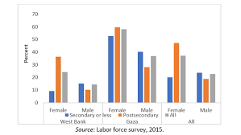

Political/Economic Measures
It is crucial for political and economic measures to be taken to address this issue, as it is not only a matter of social justice but also necessary for building a more inclusive society.
New York

To boost economic growth and create more job opportunities for women, the government can offer financing, training, and mentorship programs for women-owned businesses, along with specialized funds and grants. These economic measures can foster a diverse and inclusive business landscape in New York.
Palestine
The Palestinian Authority has implemented policies and initiatives to promote women's participation in the labor force, including establishing a gender quota for women's representation in public sector jobs and appointing women to leadership positions. Yet it hasen't made a significant chsnge.
Palestine
International organizations and NGOs have implemented programs to empower women economically in Palestine. This includes entrepreneurship training and resources, supporting women-owned businesses, and promoting access to finance and microcredit. These efforts are particularly important in rural areas, where economic opportunities for women may be limited.
New York

The government can promote political measures to increase representation of women in leadership positions by implementing policies that encourage diversity and inclusivity in the workplace, including affirmative action programs. Such measures can help address systemic barriers that prevent women from advancing in their careers and create a more diverse and inclusive workforce.